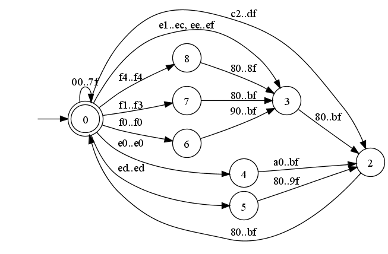
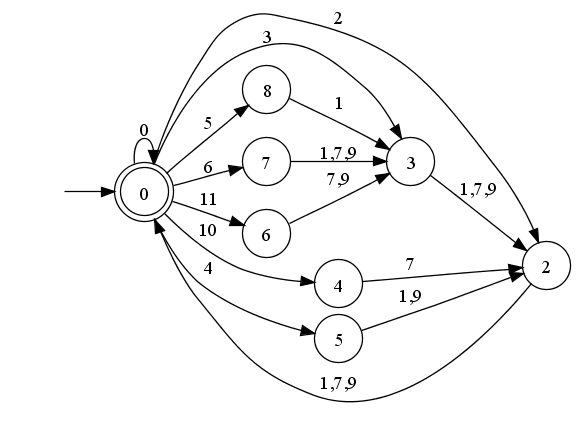
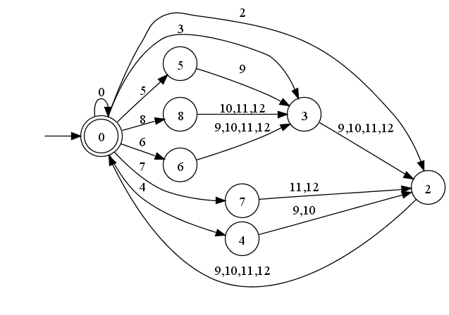

Systems with elaborate Unicode support usually confront programmers with a multitude of different functions and macros to process UTF-8 encoded strings, often with different ideas on handling buffer boundaries, state between calls, error conditions, and performance characteristics, making them difficult to use correctly and efficiently. Implementations also tend to be very long and complicated; one popular library has over 500 lines of code just for one version of the decoder. This page presents one that is very easy to use correctly, short, small, fast, and free.
// Copyright (c) 2008-2009 Bjoern Hoehrmann <bjoern@hoehrmann.de>// See https://bjoern.hoehrmann.de/utf-8/decoder/dfa/ for details.#defineUTF8_ACCEPT 0#defineUTF8_REJECT 1static constuint8_t utf8d[] = { 0,0,0,0,0,0,0,0,0,0,0,0,0,0,0,0,0,0,0,0,0,0,0,0,0,0,0,0,0,0,0,0,// 00..1f0,0,0,0,0,0,0,0,0,0,0,0,0,0,0,0,0,0,0,0,0,0,0,0,0,0,0,0,0,0,0,0,// 20..3f0,0,0,0,0,0,0,0,0,0,0,0,0,0,0,0,0,0,0,0,0,0,0,0,0,0,0,0,0,0,0,0,// 40..5f0,0,0,0,0,0,0,0,0,0,0,0,0,0,0,0,0,0,0,0,0,0,0,0,0,0,0,0,0,0,0,0,// 60..7f1,1,1,1,1,1,1,1,1,1,1,1,1,1,1,1,9,9,9,9,9,9,9,9,9,9,9,9,9,9,9,9,// 80..9f7,7,7,7,7,7,7,7,7,7,7,7,7,7,7,7,7,7,7,7,7,7,7,7,7,7,7,7,7,7,7,7,// a0..bf8,8,2,2,2,2,2,2,2,2,2,2,2,2,2,2,2,2,2,2,2,2,2,2,2,2,2,2,2,2,2,2,// c0..df0xa,0x3,0x3,0x3,0x3,0x3,0x3,0x3,0x3,0x3,0x3,0x3,0x3,0x4,0x3,0x3,// e0..ef0xb,0x6,0x6,0x6,0x5,0x8,0x8,0x8,0x8,0x8,0x8,0x8,0x8,0x8,0x8,0x8,// f0..ff0x0,0x1,0x2,0x3,0x5,0x8,0x7,0x1,0x1,0x1,0x4,0x6,0x1,0x1,0x1,0x1,// s0..s01,1,1,1,1,1,1,1,1,1,1,1,1,1,1,1,1,0,1,1,1,1,1,0,1,0,1,1,1,1,1,1,// s1..s21,2,1,1,1,1,1,2,1,2,1,1,1,1,1,1,1,1,1,1,1,1,1,2,1,1,1,1,1,1,1,1,// s3..s41,2,1,1,1,1,1,1,1,2,1,1,1,1,1,1,1,1,1,1,1,1,1,3,1,3,1,1,1,1,1,1,// s5..s61,3,1,1,1,1,1,3,1,3,1,1,1,1,1,1,1,3,1,1,1,1,1,1,1,1,1,1,1,1,1,1,// s7..s8}; uint32_tinlinedecode(uint32_t* state, uint32_t* codep, uint32_t byte) { uint32_t type = utf8d[byte]; *codep = (*state != UTF8_ACCEPT) ? (byte & 0x3fu) | (*codep << 6) : (0xff >> type) & (byte); *state = utf8d[256 + *state*16 + type];return*state; }
UTF-8 is a variable length character encoding. To decode a character one or more bytes have to be read from a string. The decode
function implements a single step in this process. It takes two
parameters maintaining state and a byte, and returns the state achieved
after processing the byte. Specifically, it returns the value UTF8_ACCEPT (0) if enough bytes have been read for a character, UTF8_REJECT (1) if the byte is not allowed to occur at its position, and some other positive value if more bytes have to be read.
When decoding the first byte of a string, the caller must set the state variable to UTF8_ACCEPT. If, after decoding one or more bytes the state UTF8_ACCEPT is reached again, then the decoded Unicode character value is available through the codep parameter. If the state UTF8_REJECT
is entered, that state will never be exited unless the caller
intervenes. See the examples below for more information on usage and
error handling, and the section on implementation details for how the
decoder is constructed.
This function checks if a null-terminated string is a well-formed UTF-8 sequence and counts how many code points are in the string.
intcountCodePoints(uint8_t* s, size_t* count) { uint32_t codepoint; uint32_t state = 0;for(*count = 0; *s; ++s)if(!decode(&state, &codepoint, *s)) *count += 1;returnstate != UTF8_ACCEPT; }
It could be used like so:
if(countCodePoints(s, &count)) { printf("The string is malformed\n"); }else{ printf("The string is %u characters long\n", count); }
This function prints out all code points in the string and an error message if unexpected bytes are encountered, or if the string ends with an incomplete sequence.
voidprintCodePoints(uint8_t* s) { uint32_t codepoint; uint32_t state = 0;for(; *s; ++s)if(!decode(&state, &codepoint, *s)) printf("U+%04X\n", codepoint);if(state != UTF8_ACCEPT) printf("The string is not well-formed\n"); }
This loop prints out UTF-16 code units for the characters in a null-terminated UTF-8 encoded string.
for(; *s; ++s) {if(decode(&state, &codepoint, *s))continue;if(codepoint <= 0xFFFF) { printf("0x%04X\n", codepoint);continue; }// Encode code points above U+FFFF as surrogate pair.printf("0x%04X\n", (0xD7C0 + (codepoint >> 10))); printf("0x%04X\n", (0xDC00 + (codepoint & 0x3FF))); }
It is sometimes desireable to recover from errors when decoding
strings that are supposed to be UTF-8 encoded. Programmers should be
aware that this can negatively affect the security properties of their
application. A common recovery method is to replace malformed sequences
with a substitute character like U+FFFD REPLACEMENT CHARACTER.
Decoder implementations differ in which octets they replace and where they restart. Consider for instance the sequence 0xED 0xA0 0x80.
It encodes a surrogate code point which is prohibited in UTF-8. A
recovering decoder may replace the whole sequence and restart with the
next byte, or it may replace the first byte and restart with the second
byte, replace it, restart with the third, and replace the third byte
aswell.
The following code implements one such recovery strategy. When an
unexpected byte is encountered, the sequence up to that point will be
replaced and, if the error occured in the middle of a sequence, will
retry the byte as if it occured at the beginning of a string. Note that
the decode function detects errors as early as possible, so the sequence
0xED 0xA0 0x80 would result in three replacement characters.
for(prev = 0, current = 0; *s; prev = current, ++s) {switch(decode(¤t, &codepoint, *s)) {caseUTF8_ACCEPT:// A properly encoded character has been found.printf("U+%04X\n", codepoint);break;caseUTF8_REJECT:// The byte is invalid, replace it and restart.printf("U+FFFD (Bad UTF-8 sequence)\n"); current = UTF8_ACCEPT;if(prev != UTF8_ACCEPT) s--;break; ...
For some recovery strategies it may be useful to determine the number
of bytes expected. The states in the automaton are numbered such that,
assuming C's division operator, state / 3 + 1 is that number. Of course, this will only work for states other than UTF8_ACCEPT and UTF8_REJECT. This number could then be used, for instance, to skip the continuation octets in the illegal sequence 0xED 0xA0 0x80 so it will be replaced by a single replacement character.
This is a rough outline of a UTF-16 transcoder. Actual applications would add code for error reporting, reporting of words written, required buffer size in the case of a small buffer, and possibly other things. Note that in order to avoid checking for free space in the inner loop, we determine how many bytes can be read without running out of space. This is one utf-8 byte per available utf-16 word, with one exception: if the last byte read was the third byte in a four byte sequence we would get two words for the next byte; so we read one byte less than we have words available. This additional word is also needed for null-termination, so it's never wrong to read one less.
inttoUtf16(uint8_t* src, size_t srcBytes, uint16_t* dst, size_t dstWords, ...) { uint8_t* src_actual_end = src + srcBytes; uint8_t* s = src; uint16_t* d = dst; uint32_t codepoint; uint32_t state = 0;while(s < src_actual_end) { size_t dst_words_free = dstWords - (d - dst); uint8_t* src_current_end = s + dst_words_free - 1;if(src_actual_end < src_current_end) src_current_end = src_actual_end;if(src_current_end <= s)gototoosmall;while(s < src_current_end) {if(decode(&state, &codepoint, *s++))continue;if(codepoint > 0xffff) { *d++ = (uint16_t)(0xD7C0 + (codepoint >> 10)); *d++ = (uint16_t)(0xDC00 + (codepoint & 0x3FF)); }else{ *d++ = (uint16_t)codepoint; } } }if(state != UTF8_ACCEPT) { ... }if((dstWords - (d - dst)) == 0)gototoosmall; *d++ = 0; ... toosmall: ... }
The utf8d table consists of two parts. The first part
maps bytes to character classes, the second part encodes a deterministic
finite automaton using these character classes as transitions. This
section details the composition of the table.
UTF-8 is a variable length character encoding. That means state has to be maintained while processing a string. The following transition graph illustrates the process. We start in state zero, and whenever we come back to it, we've seen a whole Unicode character. Transitions not in the graph are disallowed; they all lead to state one, which has been omitted for readability.

The byte ranges in the transition graph above are not easily encoded in the automaton in a manner that would allow fast lookup. Instead of encoding the ranges directly, the ranges are split such that each byte belongs to exactly one character class. Then the transitions go over these character classes.

Primarily to save space in the transition table, bytes are mapped to character classes. This is the mapping:
| 00..7f | 0 | 80..8f | 1 |
|---|---|---|---|
| 90..9f | 9 | a0..bf | 7 |
| c0..c1 | 8 | c2..df | 2 |
| e0..e0 | 10 | e1..ec | 3 |
| ed..ed | 4 | ee..ef | 3 |
| f0..f0 | 11 | f1..f3 | 6 |
| f4..f4 | 5 | f5..ff | 8 |
For bytes that may occur at the beginning of a multibyte sequence,
the character class number is also used to remove the most significant
bits from the byte, which do not contribute to the actual code point
value. Note that 0xc0, 0xc1, and 0xf5 .. 0xff
have all their bits removed. These bytes cannot occur in well-formed
sequences, so it does not matter which bits, if any, are retained.
| c0 | 8 | 11000000 | d0 | 2 | 11010000 | e0 | 10 | 11100000 | f0 | 11 | 11110000 |
|---|---|---|---|---|---|---|---|---|---|---|---|
| c1 | 8 | 11000001 | d1 | 2 | 11010001 | e1 | 3 | 11100001 | f1 | 6 | 11110001 |
| c2 | 2 | 11000010 | d2 | 2 | 11010010 | e2 | 3 | 11100010 | f2 | 6 | 11110010 |
| c3 | 2 | 11000011 | d3 | 2 | 11010011 | e3 | 3 | 11100011 | f3 | 6 | 11110011 |
| c4 | 2 | 11000100 | d4 | 2 | 11010100 | e4 | 3 | 11100100 | f4 | 5 | 11110100 |
| c5 | 2 | 11000101 | d5 | 2 | 11010101 | e5 | 3 | 11100101 | f5 | 8 | 11110101 |
| c6 | 2 | 11000110 | d6 | 2 | 11010110 | e6 | 3 | 11100110 | f6 | 8 | 11110110 |
| c7 | 2 | 11000111 | d7 | 2 | 11010111 | e7 | 3 | 11100111 | f7 | 8 | 11110111 |
| c8 | 2 | 11001000 | d8 | 2 | 11011000 | e8 | 3 | 11101000 | f8 | 8 | 11111000 |
| c9 | 2 | 11001001 | d9 | 2 | 11011001 | e9 | 3 | 11101001 | f9 | 8 | 11111001 |
| ca | 2 | 11001010 | da | 2 | 11011010 | ea | 3 | 11101010 | fa | 8 | 11111010 |
| cb | 2 | 11001011 | db | 2 | 11011011 | eb | 3 | 11101011 | fb | 8 | 11111011 |
| cc | 2 | 11001100 | dc | 2 | 11011100 | ec | 3 | 11101100 | fc | 8 | 11111100 |
| cd | 2 | 11001101 | dd | 2 | 11011101 | ed | 4 | 11101101 | fd | 8 | 11111101 |
| ce | 2 | 11001110 | de | 2 | 11011110 | ee | 3 | 11101110 | fe | 8 | 11111110 |
| cf | 2 | 11001111 | df | 2 | 11011111 | ef | 3 | 11101111 | ff | 8 | 11111111 |
There are several ways to change the implementation of this decoder. For example, the size of the data table can be reduced, at the cost of a couple more instructions, so it omits the mapping of bytes in the US-ASCII range, and since all entries in the table are 4 bit values, two values could be stored in a single byte.
In some situations it may be beneficial to have a separate start state. This is easily achieved by copying the s0 state in the array to the end, and using the new state 9 as start state as needed.
Where callers require the code point values, compilers tend to generate slightly better code if the state calculation is moved into the branches, for example
if(*state != UTF8_ACCEPT) { *state = utf8d[256 + *state*16 + type]; *codep = (*codep << 6) | (byte & 63); }else{ *state = utf8d[256 + *state*16 + type]; *codep = (byte) & (255 >> type); }
As the state will be zero in the else branch, this saves a shift and an addition for each starter. Unfortunately, compilers will then typically generate worse code if the codepoint value is not needed. Naturally, then, two functions could be used, one that only calculates the states for validation, counting, and similar applications, and one for full decoding. For the sample UTF-16 transcoder a more substantial increase in performance can be achieved by manually including the decode code in the inner loop; then it is also worthwhile to make code points in the US-ASCII range a special case:
while(s < src_current_end) { uint32_t byte = *s++; uint32_t type = utf8d[byte];if(state != UTF8_ACCEPT) { codep = (codep << 6) | (byte & 63); state = utf8d[256 + state*16 + type];if(state)continue; }else if(byte > 0x7f) { codep = (byte) & (255 >> type); state = utf8d[256 + type];continue; }else{ *d++ = (uint16_t)byte;continue; } ...
Another variation worth of note is changing the comparison when setting the code point value to this:
*codep = (*state > UTF8_REJECT) ? (byte & 0x3fu) | (*codep << 6) : (0xff >> type) & (byte);
This ensures that the code point value does not exceed the value 0xff after some malformed sequence is encountered.
As written, the decoder disallows encoding of surrogate code points, overlong 2, 3, and 4 byte sequences, and 4 byte sequences outside the Unicode range. Allowing them can have serious security implications, but can easily be achieved by changing the character class assignments in the table.
The code samples have generally been written to perform well on my system when compiled with Visual C++ 7.1 and GCC 3.4.5. Slight changes may improve performance, for example, Visual C++ 7.1 will produce slightly faster code when, in the manually inlined version of the transcoder discussed above, the type assignment is moved into the branches where it is needed, and the state and codepoint assignments in the non-ASCII starter is swapped (approximately a 5% increase), but GCC 3.4.5 will produce considerably slower code (approximately 10%).
I have experimented with various rearrangements of states and character classes. A seemingly promising one is the following:

One of the continuation ranges has been split into two, the other changes are just renamings. This arrangement allows, when a continuation octet is expected, to compute the character class with a shift instead of a table lookup, and when looking at a non-ASCII starter, the next state is simply the character class. On my system the change in performance is in the area of +/- 1%. This encoding would have a number of downsides: more rejecting states are required to account for continuation octets where starters are expected, the table formatting would use more hex notation making it longer, and calculating the number of expected continuation octets from a given state is more difficult. One thing I'd still like to try out is if, perhaps by adding a couple of additional states, for continuation states the next state can be computed without any table lookup with a few easily paired instructions.
On 24th June 2010 Rich Felker pointed out that the state values in the transition table can be pre-multiplied with 16 which would save a shift instruction for every byte. D'oh! We actually just need 12 and can throw away the filler values previously in the table making the table 36 bytes shorter and save the shift in the code.
// Copyright (c) 2008-2010 Bjoern Hoehrmann <bjoern@hoehrmann.de>// See https://bjoern.hoehrmann.de/utf-8/decoder/dfa/ for details.#defineUTF8_ACCEPT 0#defineUTF8_REJECT 12static constuint8_t utf8d[] = {// The first part of the table maps bytes to character classes that// to reduce the size of the transition table and create bitmasks.0,0,0,0,0,0,0,0,0,0,0,0,0,0,0,0, 0,0,0,0,0,0,0,0,0,0,0,0,0,0,0,0, 0,0,0,0,0,0,0,0,0,0,0,0,0,0,0,0, 0,0,0,0,0,0,0,0,0,0,0,0,0,0,0,0, 0,0,0,0,0,0,0,0,0,0,0,0,0,0,0,0, 0,0,0,0,0,0,0,0,0,0,0,0,0,0,0,0, 0,0,0,0,0,0,0,0,0,0,0,0,0,0,0,0, 0,0,0,0,0,0,0,0,0,0,0,0,0,0,0,0, 1,1,1,1,1,1,1,1,1,1,1,1,1,1,1,1, 9,9,9,9,9,9,9,9,9,9,9,9,9,9,9,9, 7,7,7,7,7,7,7,7,7,7,7,7,7,7,7,7, 7,7,7,7,7,7,7,7,7,7,7,7,7,7,7,7, 8,8,2,2,2,2,2,2,2,2,2,2,2,2,2,2, 2,2,2,2,2,2,2,2,2,2,2,2,2,2,2,2, 10,3,3,3,3,3,3,3,3,3,3,3,3,4,3,3, 11,6,6,6,5,8,8,8,8,8,8,8,8,8,8,8,// The second part is a transition table that maps a combination// of a state of the automaton and a character class to a state.0,12,24,36,60,96,84,12,12,12,48,72, 12,12,12,12,12,12,12,12,12,12,12,12, 12, 0,12,12,12,12,12, 0,12, 0,12,12, 12,24,12,12,12,12,12,24,12,24,12,12, 12,12,12,12,12,12,12,24,12,12,12,12, 12,24,12,12,12,12,12,12,12,24,12,12, 12,12,12,12,12,12,12,36,12,36,12,12, 12,36,12,12,12,12,12,36,12,36,12,12, 12,36,12,12,12,12,12,12,12,12,12,12, }; uint32_tinlinedecode(uint32_t* state, uint32_t* codep, uint32_t byte) { uint32_t type = utf8d[byte]; *codep = (*state != UTF8_ACCEPT) ? (byte & 0x3fu) | (*codep << 6) : (0xff >> type) & (byte); *state = utf8d[256 + *state + type];return*state; }
To conduct some ad-hoc performance testing I've used three different UTF-8 encoded buffers and passed them through a couple of UTF-8 to UTF-16 transcoders. The large buffer is a April 2009 Hindi Wikipedia article XML dump, the medium buffer Markus Kuhn's UTF-8-demo.txt, and the tiny buffer my name, each about the number of times required for about 1GB of data. All tests ran on a Intel Prescott Celeron at 2666 MHz. See Changes for some additional details.
| Large | Medium | Tiny | |
|---|---|---|---|
NS_CStringToUTF16() Mozilla 1.9 (includes malloc/free time) |
36924ms | 39773ms | 107958ms |
iconv() 1.9 compiled with Visual C++ (Cygwin iconv 1.11 similar) |
22740ms | 21765ms | 32595ms |
g_utf8_to_utf16() Cygwin Glib 2.0 (includes malloc/free time) |
21599ms | 20345ms | 98782ms |
ConvertUTF8toUTF16() Unicode Inc., Visual C++ 7.1 -Ox -Ot -G7 |
11183ms | 11251ms | 19453ms |
MultiByteToWideChar() Windows API (Server 2003 SP2) |
9857ms | 10779ms | 12771ms |
u_strFromUTF8 from ICU 4.0.1 (Visual Studio 2008, web site distribution) |
8778ms | 5223ms | 5419ms |
PyUnicode_DecodeUTF8Stateful (3.1a2), Visual C++ 7.1 -Ox -Ot -G7 |
4523ms | 5686ms | 3138ms |
| Example section transcoder, Visual C++ 7.1 -Ox -Ot -G7 | 5397ms | 5789ms | 6250ms |
| Manually inlined transcoder (see above), Visual C++ 7.1 -Ox -Ot -G7 | 4277ms | 4998ms | 4640ms |
| Same, Cygwin GCC 3.4.5 -march=prescott -fomit-frame-pointer -O3 | 4492ms | 5154ms | 4432ms |
| Same, Cygwin GCC 4.3.2 -march=prescott -fomit-frame-pointer -O3 | 5439ms | 6322ms | 5567ms |
| Same, Visual C++ 6.0 -TP -O2 | 5398ms | 6259ms | 6446ms |
| Same, Visual C++ 7.1 -Ox -Ot -G7 (includes malloc/free time) | 5498ms | 5086ms | 25852ms |
I have also timed functions that xor all code points in the large buffer. In Visual Studio 2008 ICU's U8_NEXT macro comes out at ~8000ms, the U8_NEXT_UNSAFE macro, which requires complete and well-formed input, at ~4000ms, and the decode
function is at ~5900ms. Using the same manual inlining as for the
transcode function, Cygwin GCC 3.4.5 -march=prescott -O3
-fomit-frame-pointer brings it down to roughly the same times as the
transcode function for all three buffers.
While these results do not model real-world applications well, it seems reasonable to suggest that the reduced complexity does not come at the price of reduced performance. Note that instructions that compute the code point values will generally be optimized away when not needed. For example, checking if a null-terminated string is properly UTF-8 encoded ...
intIsUTF8(uint8_t* s) { uint32_t codepoint, state = 0;while(*s) decode(&state, &codepoint, *s++);returnstate == UTF8_ACCEPT; }
... does not require the individual code point values, and so the loop becomes something like this:
l1: movzx eax,al
shl edx,4
add ecx,1
movzx eax,byte ptr [eax+404000h]
movzx edx,byte ptr [eax+edx+256+404000h]
movzx eax,byte ptr [ecx]
test al,al
jne l1
For comparison, this is a typical strlen loop:
l1: mov cl,byte ptr [eax]
add eax,1
test cl,cl
jne l1
With the large buffer and the same number of times as above, strlen takes 1507ms while IsUTF8 takes 2514ms.
Copyright (c) 2008-2009 Bjoern Hoehrmann <bjoern@hoehrmann.de>
Permission is hereby granted, free of charge, to any person obtaining a copy of this software and associated documentation files (the "Software"), to deal in the Software without restriction, including without limitation the rights to use, copy, modify, merge, publish, distribute, sublicense, and/or sell copies of the Software, and to permit persons to whom the Software is furnished to do so, subject to the following conditions:
The above copyright notice and this permission notice shall be included in all copies or substantial portions of the Software.
THE SOFTWARE IS PROVIDED "AS IS", WITHOUT WARRANTY OF ANY KIND, EXPRESS OR IMPLIED, INCLUDING BUT NOT LIMITED TO THE WARRANTIES OF MERCHANTABILITY, FITNESS FOR A PARTICULAR PURPOSE AND NONINFRINGEMENT. IN NO EVENT SHALL THE AUTHORS OR COPYRIGHT HOLDERS BE LIABLE FOR ANY CLAIM, DAMAGES OR OTHER LIABILITY, WHETHER IN AN ACTION OF CONTRACT, TORT OR OTHERWISE, ARISING FROM, OUT OF OR IN CONNECTION WITH THE SOFTWARE OR THE USE OR OTHER DEALINGS IN THE SOFTWARE.
Björn Höhrmann bjoern@hoehrmann.de (Donate via SourceForge, PayPal)